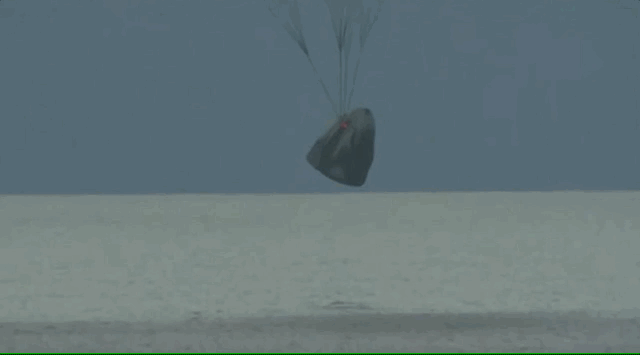

- Science
- Space
- SpaceX
- Battlefield 2042
SpaceX’s Inspiration4 crew returns to Earth, capping first fully private mission in orbit
The first all-civilian mission to space safely splashed down off the Florida coast
SpaceX’s Crew Dragon capsule carrying four private citizens plunged through Earth’s atmosphere Saturday night and splashed down off the east coast of Florida, closing out the company’s first all-civilian mission in space. The Inspiration4 crew — the mission’s billionaire funder Jared Isaacman, geoscientist Sian Proctor, physician assistant Haley Arceneaux, and data engineer Chris Sembroski — became the first crew to hang out in Earth orbit without any professionally trained astronauts.
The crew’s splashdown zone in the Atlantic Ocean was roughly 30 miles east of NASA’s Kennedy Space Center, where they launched to space atop SpaceX’s Falcon 9 rocket on Wednesday. Beginning at about 7:02PM ET, Crew Dragon deployed two sets of parachutes — an initial set of two, and a final set of four — to ease its descent toward the ocean. Splashdown happened at around 7:06PM ET. SpaceX recovery teams raced toward the capsule in boats to retrieve the crew.
“Thanks so much SpaceX, it was a heck of a ride for us, and we’re just getting started” Isaacman told SpaceX’s mission control just after splashing down.
From an on-time launch at 8:02PM ET Wednesday to an on-time splashdown Saturday, the Inspiration4 mission lasted 71 hours total. The objectives of the orbital trek were two-fold: to raise $200 million for St. Jude Children’s Hospital, a non-profit that researchers cancer and gives free care to kids with cancer and other life-threatening diseases, and conduct a scientific study on how the passengers’ bodies react to microgravity. Since launching on Wednesday, St. Jude raised roughly $20 million, putting the total fundraiser at about $153 million of its $200 million goal, St. Jude said.
With the amateur crew strapped inside, SpaceX’s Crew Dragon began its fully autonomous reentry process at around 6:11PM ET, when it ditched its trunk and fired a set of thrusters to lower itself out of orbit and toward Earth’s atmosphere. A live video feed from inside the capsule showed Sembroski taking advantage of some in-flight entertainment — a movie was playing on an iPad strapped to his knee.
The crew’s journey back to Earth appeared uneventful. They went through an expected, roughly seven-minute communications blackout with SpaceX’s mission control in California due to the sheath of plasma that forms around the capsule during its turbulent atmospheric reentry. During reentry, the exterior of the spacecraft reached temperatures of up to 3,500 degrees Fahrenheit, but the crew was kept cool by their flight suits and reinforced air conditioning inside the capsule. Crew Dragon streaked across the skies above northeast South America and zoomed toward the Cape Canaveral coast.
An initial set of two parachutes deployed as planned, slowing the capsule from 350 miles per hour to 100MPH. Those parachutes were ditched less than a minute later at an altitude of nearly 1,800ft and replaced by another deployment of four main parachutes, which worked to slow the spacecraft down to about 15MPH at splashdown.

The capsule was hoisted out of the water and onto SpaceX’s “Go Searcher” boat roughly a half hour after splashing down. After that, recovery teams opened Crew Dragon’s hatch door and guided the crew out on a platform one by one, Arceneaux leading the pack. Proctor was next, practically grooving her way onto the platform. Sembroski and Isaacman followed. Isaacman’s egress was more of a toddle, his legs shaking a bit as he adjusted to Earth’s gravity. They’ll all get checked out by medical personnel and flown in a helicopter back to land.
The crew was in high spirits after stepping out of Crew Dragon, Inspiration4 mission director Scott Poteet told reporters during a post-splashdown press conference. “They’re taking selfies, they’re having a good time, they’re eating, they’re drinking, standing up and walking around.”

For the crew’s three-day trip in orbit, roughly 363 miles high, they video chatted with St. Jude patients, rang the bell on the New York Stock Exchange, and kept in touch with friends and family. Isaacman placed a $4,000 bet to Las Vegas that the Eagles would win the Super Bowl, and at another point, remotely chatted with Tom Cruise. They put on a brief talent show on Friday in a livestream update — Sembroski jammed on a ukulele, Proctor showed off a drawing she made using a pack of metallic pens, and Arceneaux did somersaults in microgravity. “Hayley is a champ at spinning,” Proctor said as Arceneaux curled up in a ball and started tumbling in place.
The crew gathered data for a scientific study examining how microgravity affects the human body. During Friday’s video, Arceneaux showed off a device the crew was using to measure cranial pressure.
The Crew Dragon capsule, named Resilience, was the same spacecraft that nearly a year ago sent a four-person crew of government astronauts to the International Space Station and back . Few changes were made to the capsule besides a glass dome that was installed where the capsule’s docking door normally is, giving the passengers a 360-degree view of space while in orbit. The upper half of about three passengers could easily fit inside the dome.
Everything went nearly without a hitch, besides an issue with the capsule’s waste management system, or toilet.That was related to ”an issue with a fan that’s part of the system,” but it was quickly resolved, Inspiration4 mission director Todd Ericson said during a press conference. He did not offer additional details of the incident. Another issue during the mission involved a temperature sensor associated with one of Crew Dragon’s thrusters, but a backup sensor kicked in and worked fine, SpaceX’s director of crew mission management Benji Reed said. Overall, it was a “very clean mission from start to finish.”
Along with the mission’s official goals, Inspiration4 also showed that trips to orbit aren’t just for government astronauts anymore. Other missions will follow, including the first private mission to the ISS next year . The company that brokered that trip, Axiom Space, has already signed up for three additional trips to the ISS on SpaceX’s Crew Dragon.
“Welcome to the second space age,” Ericson said.